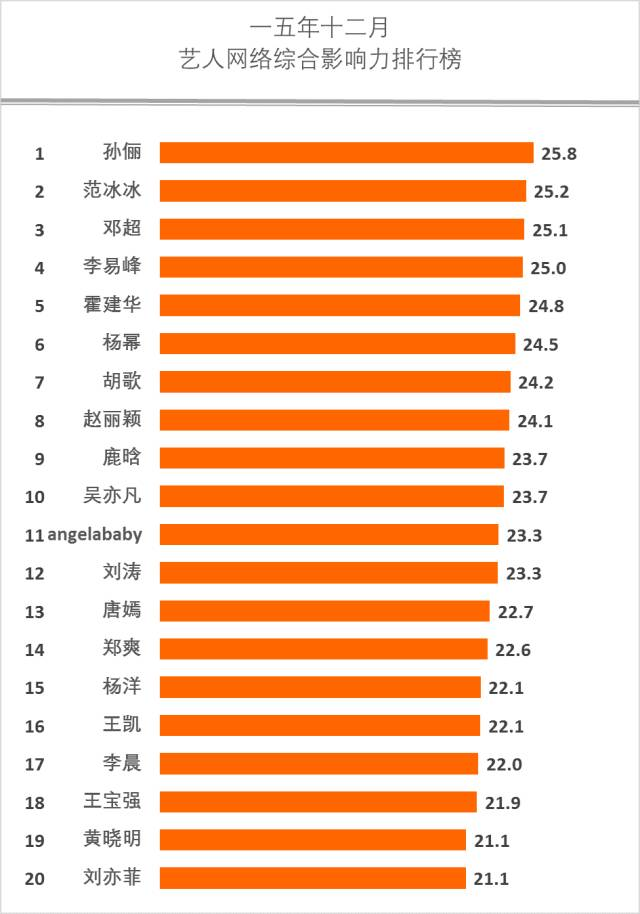
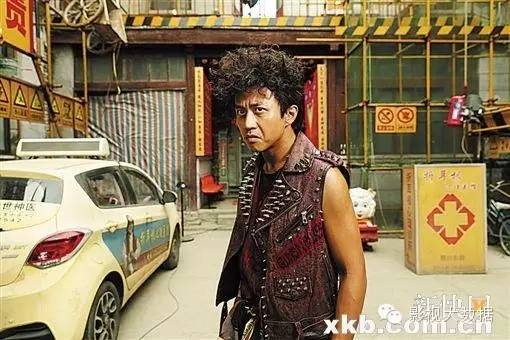
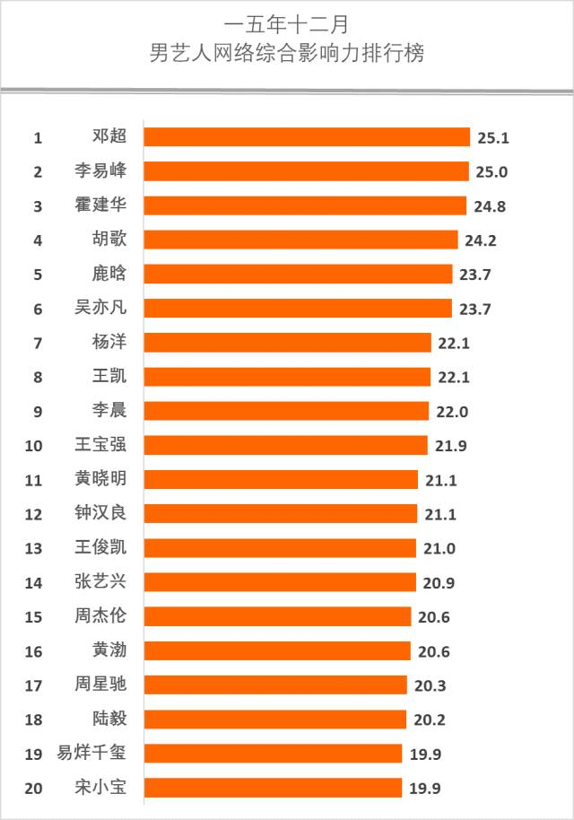
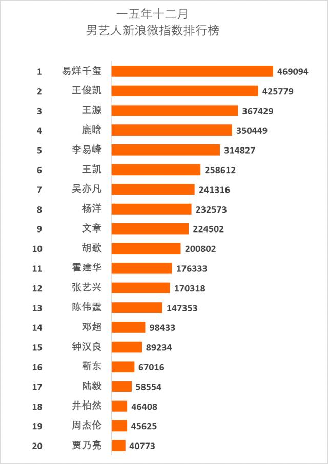
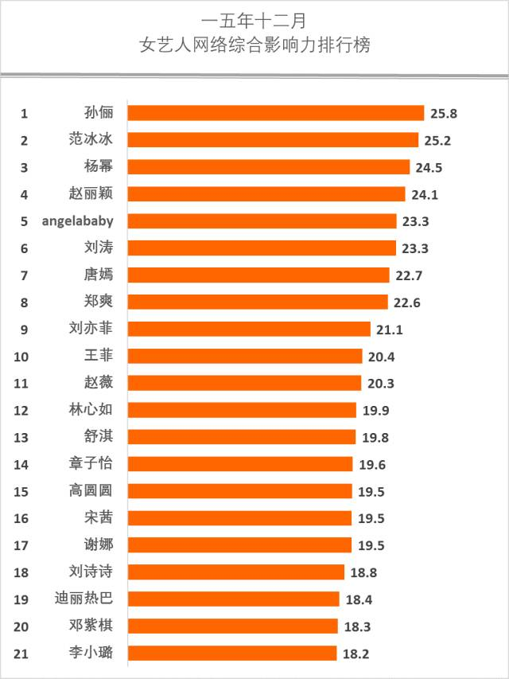

2015年12月艺人百度微信微博综合影响力排行榜，岁末年初之际，筒子们看了有何感想？


李易峰近期主演的《怦然星动》评价不高，另一部给“影帝”冯小刚做配的《老炮儿》却好评如潮，也给李易峰带回不少好感，再加上跨年演出等事件，令这位2014第一红人再度回到艺人网络综合影响力排行榜前列。必须感谢老炮儿，李易峰依然能打，参与了这部口碑之作能给他太多的续航能力。毕竟比起人气和青春，演艺的质感更能让一个演员走得长远。
霍建华《他来了请闭眼》淡定收宫，《国剧盛典》获得“观众最爱角色人物”，与胡歌的多年“基情“仍然是少妇少女们热衷的话题。岁月忽已远，美人可留行。何况是一对美人的基情呢？ 36岁老干部在2015年岁末继续保持影响力高位运行。
杨幂《怦然星动》再度合作李易峰，大幂幂颜值依旧闪耀，一对青春偶像的形象也当红得令，但也给她惹出了若干话题烦恼，令这位85后花旦领军人物重回争议漩涡。可以说杨幂是85花旦中最像范冰冰的一位，高商业价值，高争议性，高人气。其实杨幂也算有颜有演技有灵气，但商业明星的路线难免争议颇多。自己选的戏，自己选的路，那怎么都得认了。2016的杨幂，凭借灵活的头脑仍然是富有竞争力的花旦，但昔日的选题思路和演绎方式似乎也见顶了。2016对于杨幂可能是个问号，但相信这位脑袋灵光的小花旦有本事把问号变成惊叹号，即使是用另一个维度和判据。
赵丽颖在花千骨之后，人气已经上了个台阶，即使在相对沉积期，也往往是网络影响力榜单的常客。近期赵丽颖在《蜀山》中的表演颇受网络观众认可，更传闻将与吴奇隆公司有进一步资本合作，看来赵丽颖的野望也不止于“我是一个演员“。
鹿晗与吴亦凡作为第二代归国韩流的领军双雄，向来是相爱相杀，人气纠结轮替，本月也不例外。吴亦凡的《老炮儿》得了口碑，鹿晗的《跑男》提升国民度，即使是跨年话题也可以对比聊个三百回。同框画面令粉丝热血沸腾，泪飞顿作倾盆雨。从昔日EXO的荣光到今日的航能力，后续还得看他们在近期资源中的表现力和爆发力。2016将成为归国韩流的转型与裂变之年。
杨颖（Angelababy）近期几乎是每月一话题，岁末凭借大热高口碑电影《寻龙诀》再次成为观众热议焦点。因为逆天的电影改编，AB的丁思甜成为胡八一的白月光，AB也一扫云中歌中演技被诟病的尴尬，表现出清新动人的草原气息，演技确实有进步。AB的动作片票房往往高于她其他片种，而且颇招好感。照此趋势，已经做了“黄太太“的AB，2016似乎将顺利渡过转型期，继续在大银幕上作为女神存在。
刘涛在《芈月传》中的芈姝大开白莲花模式，和芈月相爱相杀，激起观众狗血情绪若干。这让2015年的刘涛在《琅琊榜》之后再创辉煌。刘涛作为当年的青春偶像、豪门少奶奶，如今却有向着戏骨发展的趋势，近期更入围飞天奖女演员奖。无论如何，一个能好好演戏的女演员总是值得我们尊重的。
唐嫣岁末获得了国剧盛典“观众最喜爱人物角色“奖，《长在面包树上的女人》终于播出，《锦绣未央》将拍，大女主玛丽苏在继续。唐嫣在电视剧业的强势地位已经形成。

郑爽的2015是奇妙的一年，虽然作品上并没有什么大爆之作，《相爱穿梭千年》影响力一般，但凭借恋情、整容、综艺、身材暴瘦等话题，郑爽的人气有所上升。这种的运营方式说明女艺人在青春鼎盛的时期确实可以凭借商业运作达到高人气。
杨洋岁末人气依然不减，凭借在商业代言、关键性IP上的频繁斩获在网络盛典中收获“年度最受关注演员”、在国剧盛典中收获两项大奖，杨洋强势杀入青少年市场。如今《三生三世十里桃花》开机，杨洋人气正在逐渐被一些关键性做实。必须说团队运营有一整套。

某种意义上，王凯可能是《伪装者》和《琅琊榜》的最大获益者。
小编的微信朋友圈有个深度王凯粉，作为一枚淡定女王范儿的业内，这女人居然每天都在嚎wuli凯凯好帅好帅，让我深深认识到了王凯对熟女也有很大杀伤力滴……
李晨因跑男和冰晨恋，继续保持大众焦点。
王宝强凭借《唐人街探案》，继续证明自己的票房能力和演艺天赋。
黄晓明在国民度爆棚的AH大婚之后，综艺《全员加速》没赢收视率、但赢了不少的观众好感度，又将迎来《大唐玄奘》，黄晓明的个人运营能力仍然是top级别的。
刘亦菲的2015堪称转型之年，随着古装电影的式微，刘亦菲频繁试水现代爱情片，虽然收效不佳，却真的收获了爱情，从此从白富美化身天仙攻。
古装仙侠题材的快速崛起，又给刘亦菲带来了大银幕上的无穷商机。《三生三世十里桃花》只是一个开始，相信随着仙侠奇幻之风大起，有颜又能打的刘亦菲仍将保持高位运行。

霍建华在百度的人气数据相当彪悍。小鲜肉整体能打。蒋劲夫凭借《秦时明月》得到一定人气，井柏然人气持续。高云翔、黄轩等“芈月系”艺人人气上行。


微信的口味向来比网络其他地带更传统和接近现实观众，传说中的“钱包拥有者”们。孙俪、范冰冰、杨幂、刘涛等人国民度都很不错。孙俪尤其优势明显。
粉丝人气曾经是赵丽颖的短板，但花千骨之后，这一点变成她的强项了。
大花旦中的范冰冰，小花旦中的杨幂、唐嫣、AB，也是粉丝强档。
宋茜作为韩流中女艺人的代表，能量不小。
岁末年初，多少沉浮。然而我们必须感谢这些艺人，用红颜与蓝颜，用光阴与光影，装点了我们的梦想。
那些我们爱过的美人们，愿依然安好。